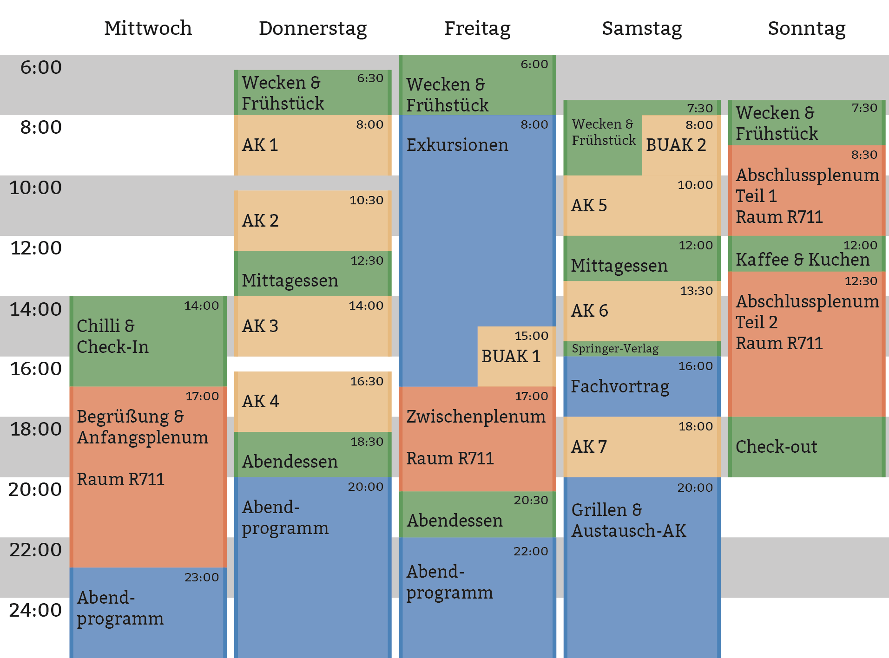

Programm
Die ZaPF findet vom 4. bis zum 8. Mai 2016 statt. Der Mittwoch ist hierbei für die Anreise und das Anfangsplenum der Sonntag für das Endplenum und die Abreise vorgesehen.
Der folgende vorläufige Zeitplan gibt euch einen groben Überblick über das geplante Programm.

Die Liste der bisherigen Arbeitskreise wird im zapf-wiki zu finden sein.